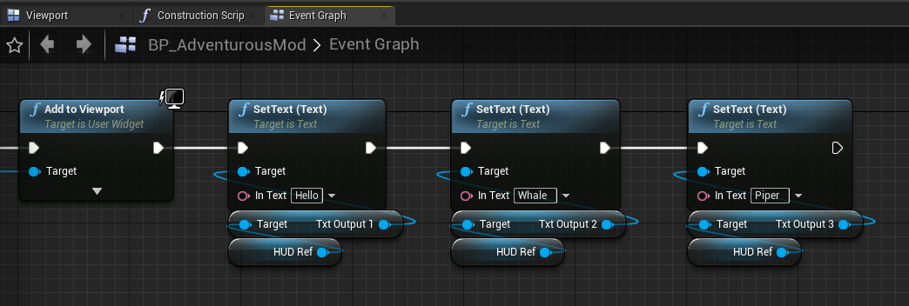
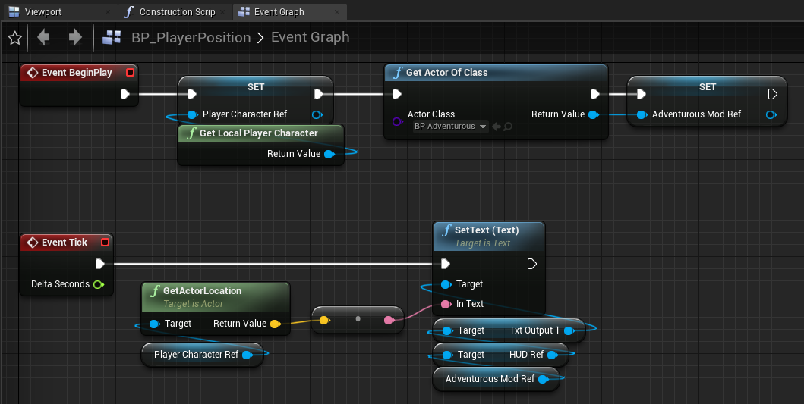

CoderTrevor's Adventures in Deep Rock Galactic Modding
Journey 1: Where am I?
By the end of this journey, you'll be able to see your character's position in the world.
You'll also add some features to the HUD which will help you to develop the rest of your mod, and you'll be able to see the HUD in caves, which if you followed the guide on mod.io, you may have noticed doesn't work out of the box.
For reference, you can download archives of my project files from before this journey began and after its completion.
Part 1: Revisiting the HUD
I think I've mentioned before that you should have followed the blueprinting guide on mod.io before coming here.
Let's start this journey off with a quick review:
- Create a folder in the Content folder named after your mod. I'll refer to it as
AdventurousModhere but substitute "AdventurousMod" with whatever you want throughout these adventures. - In the
AdventurousModfolder, create an actor blueprint calledBP_AdventurousMod. - Create a HUD widget called
WBP_AdventurousModHUD.
- Add a few lines of text to the left side of the screen and assign them each variables, called
txtOutput1,txtOutput2, andtxtOutput3. - Open up
BP_AdventurousModand edit the blueprint so it displays the HUD when the game begins. Save a reference to the widget asHUD Ref. - Go back to the
Contentfolder and create theInitSpacerigactor blueprint.
- Open the
InitSpacerigblueprint and make it spawn an instance of your mod.
- Build and launch your mod and you should see the HUD:
{kind=link}
{kind=link}
{kind=link}
{kind=link}
This should have been a review for you, so hopefully it was easy for you to follow along.
Part 2: Updating text on the HUD and keeping the blueprint tidy
Now, we can use this handy HUD to display information for our own benefit as we develop our mod.
Programming tradition dictates that every journey begins with printing "Hello World." Who am I to break with tradition?
- Open the
BP_AdventurousModblueprint and add some nodes to set the text of each text block:
 - If you compile this blueprint and launch your mod, you should see the updated text:
- Now zoom out to view the entire blueprint:
Isn't it starting to look a little... big? I mean it's only really doing two things, creating the HUD and setting some text, but look how complicated it looks! - One thing we could do is add comments. Drag-select the blocks on the left related to HUD-creation, and press c. Then, type "Create HUD."
- Next, select the boxes on the right and add the comment "Print Hello Whale Piper."
That solves the issue of the complexity; now we can see at a glance that this blueprint is only doing two things, and we don't need to think about it any further unless we want to change one of those behaviors. Comments are great, and you should use them liberally. However, we haven't really addressed how needlessly big this blueprint has become. We can do better! - Delete the two comments you just created (sorry).
- Again, drag-select the boxes related to HUD creation, only this time, right-click on one of the boxes and select "Collapse to Macro."
- Name your new macro "Create HUD."
- Repeat this process for the boxes on the right and name the macro 'Print "Hello Whale Piper"'
- Tighten up the node placement and bask in the glory of your super-clean blueprint:
{kind=link}
{kind=link}
{kind=link}
These didn't really have to be macros. You could have selected "collapse nodes" and accomplished roughly the same thing. You could have also collapsed them to functions. We'll learn more about the differences between these three options later.
{kind=link}
You may have noticed the code in the Print "Hello Whale Piper" macro seems very repetive. We'll address that in a later journey.
Part 3: Printing the player's position
If you've made it this far, you're probably eager to actually have something interesting happen! Let's do that now:
- Open the
AdventurousModfolder and create a blueprint for a new actor calledBP_PlayerPosition. Open this blueprint. - Add a
Get Player Characternode and promote the output to a variable calledPlayer Character Ref. Drag out from the BeginPlay event to set the reference on script execution.
- We also need to get a reference to our mod's actor. Add a
Get Actor of Classnode, setBP_AdventurousModfor the class, and promote the output to a variable namedAdventurousMod Ref. Have this node execute after settingPlayer Character Ref.
-
Drag in a new
getfor yourPlayer Character Refnear theEvent Ticknode and drag off a node calledGetActorLocation.
-
Now, drag in your reference to the
BP_AdventurousModactor. From here, drag out the following chain of nodes:HUD Ref→Txt Output 1→SetText. -
Next, wire up the
Return ValueofGetActorLocationto theIn Textof theSetText (Text)node. You'll notice that this will automatically insert a node to convert the vector to a Text object. Cool! -
We want the player's position on screen to be updated every frame, so drag the execution pin of
Event Tickto that ofSetText. The whole blueprint should now look like this: 
We're now done with this blueprint. Don't forget to compile and save it. - Just one more thing: we need to spawn an actor for our new blueprint! Open up the
BP_AdventurousModblueprint. - Go to the blueprint's Event Graph and delete the
Print "Hello Whale Piper"node. - Drag the execution pin off the
Create HUDmacro and add aSpawn Actor from Classnode. Set the class to BP_PlayerPosition.
- That's enough for the mod to function, but you can optionally erase the
Textfrom theContentoftxtOutput2andtxtOutput3on the HUD. Since our mod won't update this text, if you skip this step you'll see "Text Block 2" and "Text Block 3" on the HUD.

{kind=link}
{kind=link}
{kind=link}
{kind=link}
And that's it! Make sure all your blueprints have been compiled, then build and launch your mod! As you run around the space rig, you'll see coordinates for the player being updated. You might notice that the game uses centimeters for units.
Part 4: Showing the HUD in caves
At this point, you have your fancy HUD in the spacerig, but you won't be able to see it in caves.
For one thing, we never made an InitCave actor blueprint. Let's make one now and spawn the BP_AdventurousMod from it.
{kind=link}
This was a necessary step, but it's still not sufficient to show the HUD in caves. Let's fix that.
This next part I can't take credit for. I actually couldn't figure out why the HUD wasn't working in caves until I checked on Discord and saw this post from GoldBl4d3.
As GoldBl4d3 has explained, "Trying to add widgets during the mission loading screen will result in failure." This method keeps trying to add the HUD until becomes visible. It adds a short delay between each iteration to prevent looping forever.
{kind=link}
I recreated GoldBl4d3's solution from memory. It's actually a little different from what GoldBl4d3 posted, but it seems to accomplish the same thing. That's the great thing about coding: there's usually lots of different ways to solve a problem.
Launch a mission and try it out.